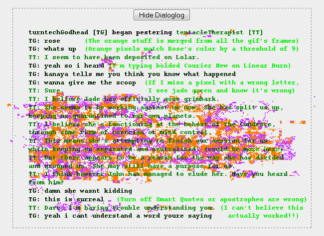
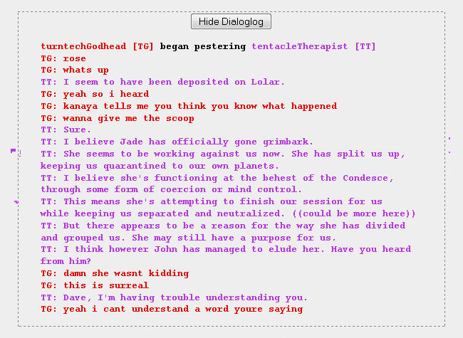

— Complete Deobfuscation of Rose’s Text!!! —
WE DID IT! WE CLEANED IT UP!!!?!
I still can’t believe it. That reddit suggestion for singling out the parts of it that were exactly the text color of Rose within a threshold was good, but I thought they could have done a better job of typing over it, and it turns out you could get a VERY precise account of certain letters whether or not their pixels overlapped with the white in the background! Building on our initial theorywork, I merged every frame of the gif, used some text filters, then got the help of the MSPA Clubhouse Chat to figure out the words that fit without violating the pixels and: BLAM. Two hours later, look at this beautiful, beautiful thing.
Here’s the transcript in text form:
- TT: I believe Jade has officially gone grimbark.
- TT: She seems to be working against us now. She has split us up,
- keeping us quarantined to our own planets.
- TT: I believe she’s functioning at the behest of the Condesce,
- through some form of coercion or mind control.
- TT: This means she’s attempting to finish our session for us
- while keeping us separated and neutralized. ((could be more here))
- TT: But there appears to be a reason for the way she has divided
- and grouped us. She may still have a purpose for us.
- TT: I think however John has managed to elude her. Have you heard from him?
- TG: damn she wasnt kidding
- TG: this is surreal
- TT: Dave, I’m having trouble understanding you.
- TG: yeah i cant understand a word youre saying
NOTE: The “((could be more here))“ is NOT in the original image, as you can see in the 2nd in-progress one by all the jade-green pixels it creates! That was just me noting that there’s a block there where there’s no way to tell if there’s any additional text. Sorry for the confusion!
(We’re probably going to get the other side of this log in a few days and it’ll all have been for nothing :P )
(EDIT: In case you’re curious, here are some of the in progress images from while we worked! EDIT2: And if you’re skeptical about some of the word choices, open up Photoshop and try replacing them in the first visible text layer in this original PSD file (warning, 12.5MB)! :D Remember to zoom in, because if you see a single stray jade-green pixel, that means your letter doesn’t fit :P )
Thanks to LegendaryQ, whitehelm, Zircean, CyclopsCaveman, and slovenlysine/Brumathan (the latter’s their forum name), and I believe I’ve shown I’ve done enough work myself too. :)
(EDIT 2013.08.01: For more deobfuscation of glitches, try my Glitch Deobfuscation tag!)
{kind=link}
{kind=link}
{kind=link}
1. Damn, that is some crazy wizardry right there.
2. Oh man, so now I think I get the Condesce’s plan. She’s going to get a fresh universe, enter it instead of the players, and resurrect her race…Damn, she’s a clever sea-bitch.